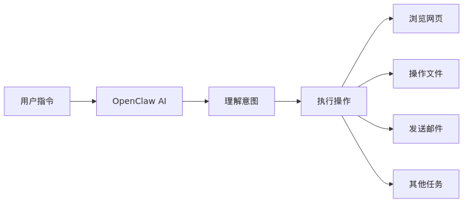
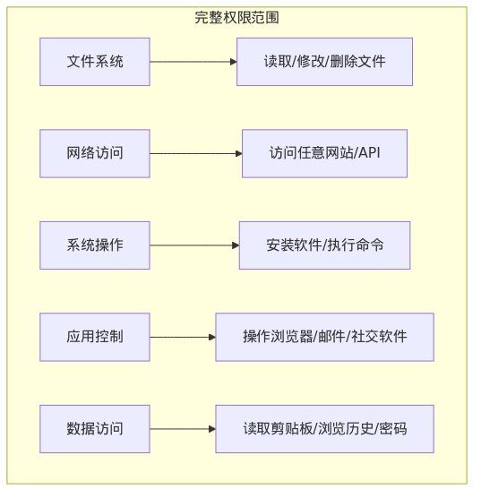
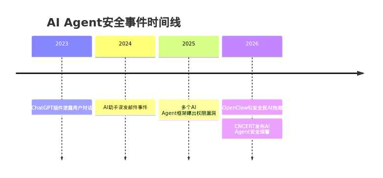
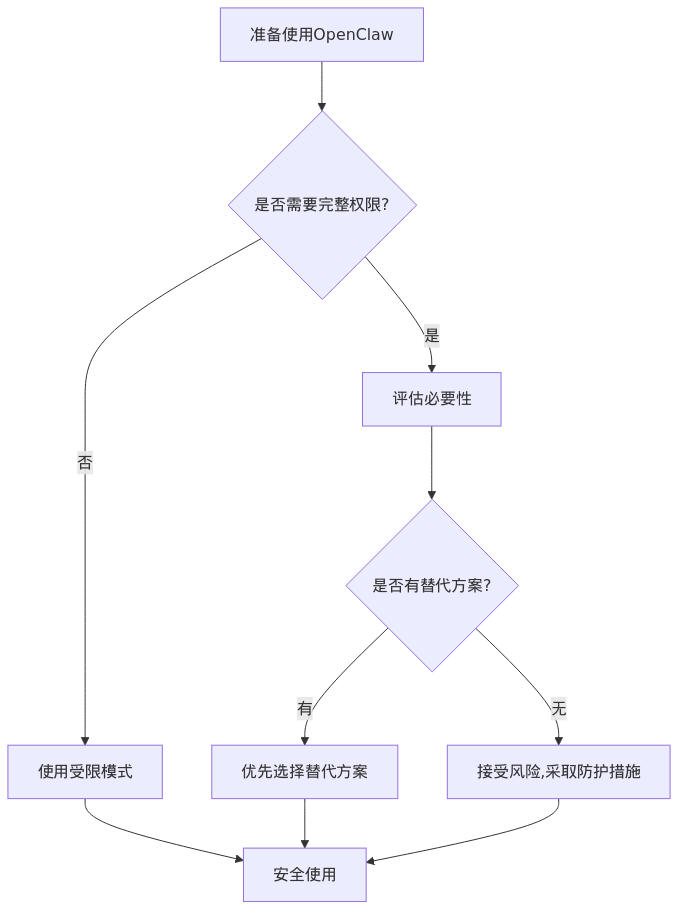
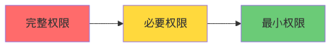
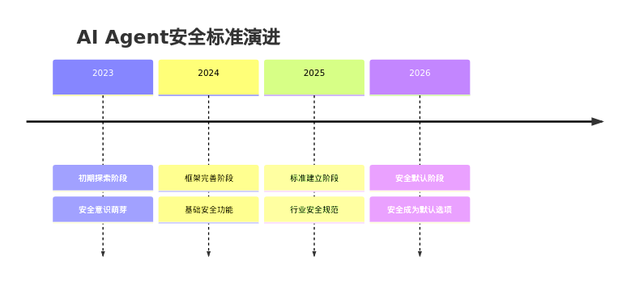

⚠️ 核心警告：2026年，OpenClaw（"小龙虾"）引发全民AI热潮，成为GitHub星标数最高的开源项目。但当用户将完整权限交给AI时，是否真正了解背后的风险？本文帮助你建立正确的AI安全意识。
一、OpenClaw是什么？为什么这么火？
1.1 OpenClaw简介
OpenClaw是一个开源的AI智能体（AI Agent）框架，让用户可以通过自然语言指令，让AI自动完成各种电脑操作：

图1：OpenClaw工作流程
1.2 为什么火爆？
| 原因 | 说明 |
|---|---|
| 门槛低 | 自然语言指令，无需编程知识 |
| 功能强 | 可完成复杂的多步骤任务 |
| 开源免费 | GitHub开源，各大云厂商支持 |
| 政策鼓励 | 多地政府出台AI产业扶持政策 |
二、核心风险：当AI拥有"完整权限"
2.1 什么是"完整权限"？

图2：完整权限范围
2.2 五大核心风险
🔴 风险一：数据泄露
| 场景 | 后果 |
|---|---|
| AI读取敏感文件 | 个人隐私、财务信息泄露 |
| AI访问浏览历史 | 上网习惯、账号信息暴露 |
| AI读取剪贴板 | 复制的密码、验证码泄露 |
🔴 风险二：恶意操作
| 场景 | 后果 |
|---|---|
| AI被诱导执行恶意命令 | 删除重要文件、安装恶意软件 |
| AI访问钓鱼网站 | 账号被盗、资金损失 |
| AI发送恶意邮件 | 社交工程攻击、诈骗 |
🟡 风险三：权限滥用
| 场景 | 后果 |
|---|---|
| AI超出任务范围操作 | 误删文件、误发信息 |
| AI访问不该访问的网站 | 隐私泄露、法律风险 |
| AI修改系统设置 | 系统不稳定、安全漏洞 |
🟡 风险四：不可逆后果
| 场景 | 后果 |
|---|---|
| AI删除文件 | 数据丢失，难以恢复 |
| AI发送信息 | 信息发出无法撤回 |
| AI执行转账 | 资金损失，追回困难 |
🟡 风险五：长期隐患
| 场景 | 后果 |
|---|---|
| AI记录操作日志 | 隐私持续泄露 |
| AI学习用户习惯 | 行为模式被掌握 |
| AI连接云端 | 数据上传至第三方 |
三、真实案例：AI Agent安全事件

图3：AI Agent安全事件时间线
3.2 典型风险模式
| 模式 | 描述 | 危险程度 |
|---|---|---|
| 提示词注入 | 攻击者通过特殊指令诱导AI执行恶意操作 | ⚠️⚠️⚠️ 高 |
| 权限越界 | AI超出用户预期范围操作 | ⚠️⚠️ 中高 |
| 数据外泄 | AI将敏感数据发送到外部服务器 | ⚠️⚠️⚠️ 高 |
| 供应链攻击 | 恶意插件/扩展植入后门 | ⚠️⚠️⚠️ 高 |
四、普通用户安全指南
4.1 使用前：评估风险

图4：使用前风险评估流程
评估清单：
| 问题 | 是 | 否 |
|---|---|---|
| 这个任务真的需要AI自动完成吗？ | ⬜ 重新考虑 | ⬜ 继续 |
| 是否可以用更安全的方式完成？ | ⬜ 选择替代方案 | ⬜ 继续 |
| 我是否了解AI会执行哪些操作？ | ⬜ 继续 | ⬜ 先了解 |
| 我是否准备好了应对意外情况？ | ⬜ 继续 | ⬜ 先准备 |
4.2 使用中：实时监控
关键监控点：
| 监控项 | 方法 | 异常处理 |
|---|---|---|
| 文件操作 | 查看AI操作日志 | 立即停止 |
| 网络访问 | 监控网络请求 | 断开网络 |
| 系统命令 | 检查执行记录 | 终止进程 |
| 数据传输 | 查看上传内容 | 撤销权限 |
4.3 使用后：安全检查
检查清单：
- 检查AI操作日志，确认无异常
- 检查文件系统，确认无意外修改
- 检查网络记录，确认无异常连接
- 检查剪贴板，清除敏感内容
- 检查已登录账号，确认无异常登录
五、安全防护最佳实践
5.1 权限最小化原则

图5：权限最小化原则
实践建议：
| 原则 | 具体做法 |
|---|---|
| 按需授权 | 只授予完成任务所需的最小权限 |
| 临时授权 | 任务完成后立即撤销权限 |
| 隔离环境 | 在虚拟机或沙箱中运行AI |
| 敏感保护 | 禁止AI访问密码、银行等敏感数据 |
5.2 数据保护措施
| 措施 | 操作方法 |
|---|---|
| 敏感文件隔离 | 将敏感文件存放在AI无法访问的目录 |
| 密码管理 | 使用独立密码管理器，禁止AI访问 |
| 剪贴板清理 | 使用后立即清除剪贴板内容 |
| 浏览历史清理 | 定期清理，或使用隐私模式 |
5.3 网络安全设置
| 设置 | 建议 |
|---|---|
| 防火墙规则 | 限制AI只能访问必要的网站 |
| DNS过滤 | 屏蔽已知恶意域名 |
| 代理监控 | 通过代理监控所有网络请求 |
| HTTPS强制 | 确保所有连接使用加密 |
六、行业监管与安全标准
6.1 国家安全预警
2026年，国家互联网应急中心（CNCERT）和工信部发布安全预警：
- 安全正在从"可选项"变成"默认项" - 国产AI Agent框架已改进安全性
- 安全底线是长期健康发展的前提 - AI Agent方向正确，但需守住安全底线
- 用户安全意识需提升 - 普通用户需了解AI权限风险
6.2 安全标准演进

图6：AI Agent安全标准演进
七、常见问题解答
Q1：OpenClaw会偷我的数据吗？
A：OpenClaw本身是开源项目，代码公开可审计。但风险来自：
- 你授予的权限范围
- 你使用的第三方插件
- 你连接的云端服务
建议：只从官方渠道下载，仔细审查插件权限。
Q2：如何知道AI在做什么？
A：大多数AI Agent框架提供操作日志功能：
- 查看实时操作记录
- 设置操作确认提示
- 启用详细日志模式
Q3：发现异常操作怎么办？
A：立即执行以下步骤：
- 终止进程 - 停止AI运行
- 断开网络 - 防止数据外泄
- 检查系统 - 查看是否有异常修改
- 修改密码 - 如果密码可能泄露
- 报告问题 - 向开发者或安全机构报告
Q4：普通用户如何选择安全的AI工具？
A：选择时考虑以下因素：
| 因素 | 安全选择 |
|---|---|
| 开源vs闭源 | 优先选择开源，代码可审计 |
| 权限控制 | 选择提供细粒度权限控制的工具 |
| 数据存储 | 优先选择本地处理，避免云端上传 |
| 安全认证 | 查看是否有安全认证或审计报告 |
| 社区评价 | 查看用户反馈和安全讨论 |
八、总结：安全使用AI的黄金法则
🛡️ 记住这五句话：
- 权限越小越安全 - 只给AI完成任务所需的最小权限
- 监控不能少 - 实时关注AI的操作行为
- 敏感要隔离 - 密码、银行等敏感信息禁止AI访问
- 用完即撤销 - 任务完成后立即收回权限
- 异常即停止 - 发现任何异常立即终止操作
✅ 核心原则：不信任 → 验证 → 限制 → 监控
AI Agent是强大的工具，但安全永远是第一位的。享受AI便利的同时，请时刻保持警惕！
AI Agent是强大的工具，但安全永远是第一位的。享受AI便利的同时，请时刻保持警惕！